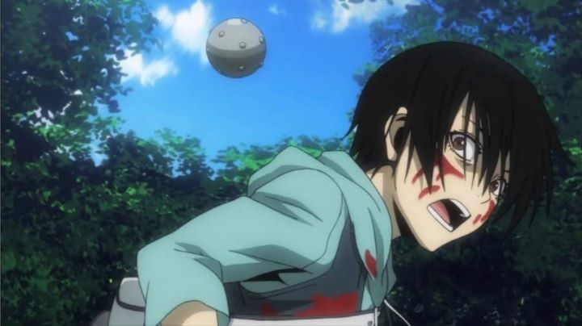

The 2012 anime adaptation of "Btooom!" doesn't try to hide what it is. The title of the show pratically gives it away. In a cynical take of the modern world, Ryota is a unemployed teenager waiting for his dream company, a game developer, to hire him, while he sits in his bedroom playing video games all day and night. Desparate, his mother signs him up for a mysterious program... Ryota wakes up one day to find himself on a deserted island alongside other people of various types, each also brought to the island by suspicious means. They are put into a real-life version of the hit video game "Btooom!," and against their will have to play along, which means throwing bombs with different properties at each other until only one is left standing. Except, unlike most games, this is real, so... some people are going to die. It's a take on the now classic "Battle Royale" genre with modern video game tropes.If the premise sounds entertaining, then you'll probably enjoy the trigger-happy action show. It is well suited to a generation that grew up on online-multiplayer and first-person-shooters in place of playing soccer or baseball with friends in the neighborhood. Violence doesn't phase people like it should, and the show addresses this and other relevant themes. It plays the game in an entertaining fashion, giving us enough backstory for most of the characters to feel invested in them, and setting up tense scenarios to keep you guessing who will stay alive. The only major downside to the story is the cliffhanger ending, presumably because the manga at the time didn't have any more material to adapt (the anime came out in 2012, the manga finished in 2018). A second season is unlikely, but if you can stomach that, you'll have a fun time. ... although I do want to mention one thing I couldn't stomach, and that is the treatment of the female lead, Himiko. She is a beautiful high school student who knew Ryota in the digital game as her virtual husband. The show gives us a guess to how she ended up in the real game, and it involves an incident where she was nearly raped, but able to escape while her best friends where left behind screaming. Its rare to see rape portrayed on screen, and while exagerrated, the horror of such an event at least tries to suggest the emotional shock one would feel. However, the event also causes Himiko to have a natural distrust of all men from that point on, a personality trait that is used mostly for comedic effect throughout the show. The whole thing feels as if it was using rape for entertainment purposes, and it feels in bad taste. This isn't the only time around this period that Studio Madhouse used rape in a distasteful way, and for some people, that alone will prevent them from enjoying "Btooom!." Unfotrunately, I hear that gamer culture around this time didn't mind using terms like "YOU GOT RAPED!" when beating a player, so maybe the target audience really wouldn't mind.Otherwise, you would be treated with solid and stylized visuals and animation, well suited to the gritty violence of modern games. The music is loud and catchy, setting the tone for a fast-paced and tense action scene, which plenty of sound effects appropriate for explosions and creative deaths. The acting is tense in both English and Japanese, but doesn't have much opportunity for any other range.  Even in Hollywood, we get feature films each year that are meant to be mindless, popcorn entertainment with extreme violence and action. "Btooom!" is a prime example of the anime version of that. There are certainly better ways to spend your time, but sometimes you need something mindless, and for those times, this is candy.
- "Ani" More reviews can be found at : https://2danicritic.github.io/ Previous review: review_Boy_and_the_World Next review: review_C_-_Control_-_Money_of_Soul_and_Possibility